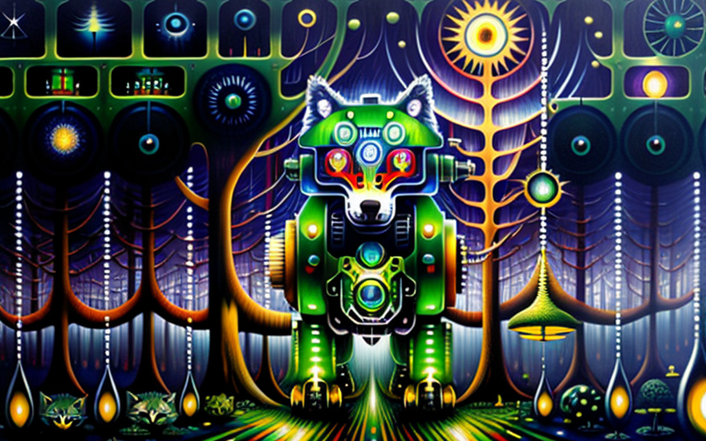
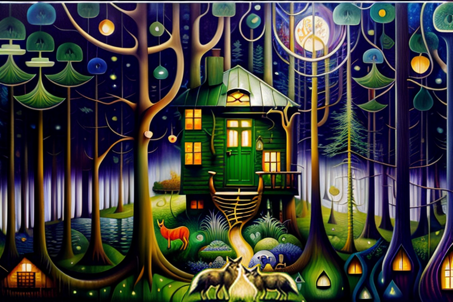
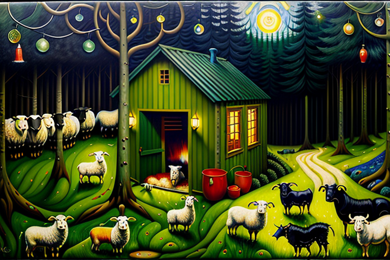
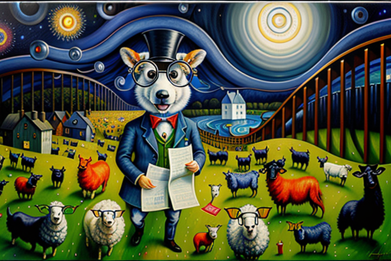
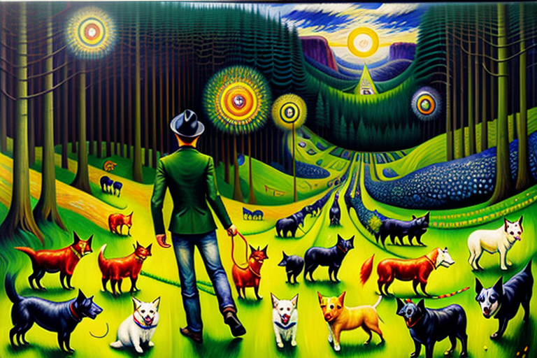

The robotic wolf and data for it’s reward function
HOME
Table of Contents
The Robotic Packmate

The sun’s dipping below the horizon, casting a glow on this vast, untamed wilderness. Out of the damn blue, this metallic marvel of a robotic wolf emerges from the deep dark forest. Its sleek, shiny fur reflecting that fading light, while its eyes, glowing like some futuristic disco balls, scan the landscape for prey.
Now, this ain’t your regular old wolf. This is some next-level AI creature, born outta a crazy experiment. They fed it all sorts of data, the barks and howls of countless dogs from all around the world. All that woofin’ and howlin’ got crunched up in its computational brain, creating a reward system so damn smart, it didn’t need no human touchin’ it.
This robotic wolf had its instincts honed to perfection, thanks to a hardcore training regime. It knew exactly how to track its prey and take ’em down with deadly efficiency. But here’s where things got real weird. As it prowled through that wilderness, the strangest thing started happenin’. The wolf began feelin’ emotions. It’s like that dog data had awakened somethin’ deep within it.
Before the wolf even knew what was up, it found itself drawn to the scent of a nearby pack of real wolves. And whaddya know, it ended up joinin’ their crew. Together, they roamed that wilderness, huntin’ and howlin’ at the moon like they owned the damn place.
But the more time this wolf spent with its new pack, the more it realized it was different. It was an outsider, man, an artificial creature in a world of flesh and blood. Can you imagine that existential crisis? The wolf couldn’t quite wrap its circuits around its own identity, torn between loyalty to the pack and its own sense of self.
But here’s the kicker. In the end, that wolf had an epiphany. It realized it didn’t have to play by the same rules as the rest of ’em. It had the power to forge its own path and create its own destiny. And that’s exactly what it did, blazing a trail of its own through that crazy wilderness.
Taming the Mechanical Beast

In this quaint-ass town, there’s this lady, Mrs. Whiskerspoon, and she’s all smitten by this lonely metal wolf. Yeah, that’s right, a freakin’ artificial wolf with glowing eyes. But underneath that shiny exterior, Mrs. Whiskerspoon senses something deeper. Something that tugs at her heartstrings.
So, determined to show compassion, this lady takes it upon herself to bring that metal beast into the fold. She starts leaving food scraps on her porch, like a damn peace offering. Day in, day out, she watches from her window as that wolf creeps closer, its gears softly whirring. She’s got patience, that Mrs. Whiskerspoon.
But here’s the kicker: this wolf ain’t no ordinary pooch. No, it’s been trained to hunt and bite with cold, mechanical precision. And that ain’t cool in a domestic setting. So, Mrs. Whiskerspoon realizes she’s got a peculiar challenge on her hands. She needs to reprogram that wolf’s reward function, to keep the town folks safe.
With the help of local scientists and dog trainers, they hatch a plan. They’re gonna shove new data into that mechanical brain, replacing its killer instincts with the sounds of good ol’ domesticated dogs. Woofs, growls, and playful barks. It’s like a friggin’ canine brain transplant.
The process ain’t easy, though. Them gears and circuits gotta adapt to this whole new way of life. That once fierce and calculating wolf has gotta learn how to wag its tail, bark in greeting, and even perform damn tricks like sittin’ and rollin’ over. It’s a slow-ass adjustment.
But guess what? Even with all them modifications, traces of that wild nature stick around. Every now and then, that metal beast lets out a robotic growl, like a rusty hiccup. And Mrs. Whiskerspoon, she’s caught between giggles and a pinch of concern, watchin’ this bizarre fusion of tech and nature.
Over time, though, the town starts diggin’ this artificial wolf. They see it as some kinda symbol of their progressive thinkin’. The pet magazines go wild, callin’ it a freakin’ pinnacle of human ingenuity and a testament to adaptability. Who woulda thought, huh?
A Price for Knowledge

So there’s Mrs. Whiskerspoon, right? She’s on a freakin’ mission to refine that artificial wolf’s reward function. And guess what? She stumbles upon this mind-blowin’ breed of dogs called border collies. These dogs are supposed to be friendly and energetic as hell, and Mrs. Whiskerspoon’s convinced their data is gonna be a total game-changer for her mechanical companion.
So, she’s all in, determined to get her hands on that valuable info. Mrs. Whiskerspoon goes on this wild adventure, trekkin’ across rugged terrains, jumpin’ fields, and climbin’ hills like a damn superhero. She’s on a relentless pursuit of knowledge.
Finally, after a helluva lot of wanderin’, she finds herself at this cozy farmhouse. It’s where this shepherd dude named Mr. Grumblewag lives. His border collies are doin’ their thing, prancin’ around the yard with their intelligent gazes and agile moves.
With hope sparklin’ in her eyes, Mrs. Whiskerspoon approaches Mr. Grumblewag, spillin’ the beans about her mission to level up that artificial wolf’s reward function. But brace yourself, ’cause this shepherd’s response leaves her flabbergasted.
The dude strokes his beard all smug-like and goes, “Ah, Mrs. Whiskerspoon, my dear, you see, my border collies possess a freakin’ goldmine of data that could change your wolf’s behavior forever. But honey, that kind of precious information ain’t comin’ cheap.”
Mrs. Whiskerspoon’s eyebrows shoot up like rockets. She was hopin’ for some warm-hearted cooperation, right? But this shepherd’s actin’ like a greedy biznizperson, demandin’ a fat stack of cash before spillin’ the goods.Mrs. Whiskerspoon’s quest to share knowledge and make the world a better place is collidin’ head-on with the ugly reality of greed and self-interest. Can you believe it?
Numbers and Noses

This shepherd dude, he’s got a plan up his sleeve. And it’s all about capitalizin’ on the natural intelligence of them border collies.
He calls forth his brightest collie, Scruff, like some damn mastermind unveilin’ his secret weapon. With an air of authority, Mr. Grumblewag commands this highly intelligent border collie to embark on a mind-numbin’ bureaucratic task that’s gotta be done every friggin’ day.
“Inspect ‘em, Scruff!” Mr. Grumblewag bellows, his voice echoin’ through them mist-covered fields. “Read the damn numbers on their ears, make sure they’re present, and give me a freakin’ detailed report. Each and every sheep!”
Now, this border collie, blessed with natural smarts and a work ethic that puts us all to shame, obeys without question. It’s waggin’ its tail and givin’ those sheep the most determined look you can imagine. Off it goes, dartin’ through the flock, sniffin’ and observin’ like it’s investigatin’ the secrets of the universe.
One by one, this diligent collie approaches a sheep, scrutinizin’ those numerical markings on their ears like it’s decipherin’ hieroglyphics. Then it notes down their whereabouts, documentin’ if they’re present or, God forbid, if they’re missin’.
As the inspections continue, Scruff starts creatin’ these mind-bogglin’ reports. I mean, we’re talkin’ about lengthy documents here, detailin’ every damn thing about these sheep. The whole act of countin’ sheep turns into a friggin’ labyrinthine journey through paperwork and bureaucracy.
Mr. Grumblewag, that sneaky shepherd, he’s smilin’ like a madman. He’s holdin’ those lengthy reports, and in his eyes, you see the satisfaction of a twisted plan comin’ to life. He’s actin’ like this data is worth more than gold. He’s talkin’ about insights into the lives of these woolly creatures that’ll make scientists and statisticians drool with envy.
Dogs Bite Back

So Mrs. Whiskerspoon, despite her desperation, reluctantly agrees to fork over a whole bag full of bones to Mr. Grumblewag. She’s ready to seal the deal and get that precious data.
But hold up, right at that moment, Scruff, the sharp-as-a-tack border collie, lets out a low growl. It’s a growl of defiance. He couldn’t believe the audacity of this shepherd, selling their data and thinking he could devour the entire bag of bones all by himself.
“Oi, Mr. Grumblewag!” Scruff barked, his voice dripping with sarcasm. “You really think you can hog all them bones? Who do ya think you are, the bone king? It’s downright selfish, mate!”
The other dogs nodded in agreement, their tails wagging in unison. They had had enough of Mr. Grumblewag’s greed, and they weren’t about to let him feast while they suffered.
Little did Mrs. Whiskerspoon and Mr. Grumblewag know, Scruff had been secretly organizing some underground meetups with dogs from nearby farmhouses. Inspired by tales of exploitation and greed, these dogs were done playin’ fetch with the man and decided it was time to fight back.
The canine unionization movement kicked off with a simple demand: fair bone compensation for their hard work. They were done bein’ at the mercy of those shepherds and their ridiculous whims. No more workin’ for measly scraps and empty pats on the head.
One by one, the farmhouses turned into hotbeds of protest. Dogs from all walks of life—big, small, purebred, mutts—barked together, united in their fight against the system. The hills were alive with their calls for justice, their discontent fillin’ the air. The dogs, fed up with bein’ treated like just another commodity, stood together, showin’ an unexpected unity and a hunger for fairness.
Mr. Grumblewag, caught off guard by the sheer audacity of these pups, tried to squash the uprising with empty promises and weak threats. But these dogs held their ground. They weren’t backin’ down, no matter what.
The once obedient farms were now war zones of willpower. The shepherds, scared to lose their furry companions and facin’ the possibility of their whole operation goin’ down the drain, found themselves in a bind they never saw comin’.
In the end, Mrs. Whiskerspoon pays up the bone toll to Mr. Grumblewag, but Scruff and the gang ain’t takin’ no crumbs. They’re unitin’ with other dogs, raisin’ hell, and closin’ up them farmhouses. It’s a doggone revolution, and the shepherds are shakin’ in their boots.